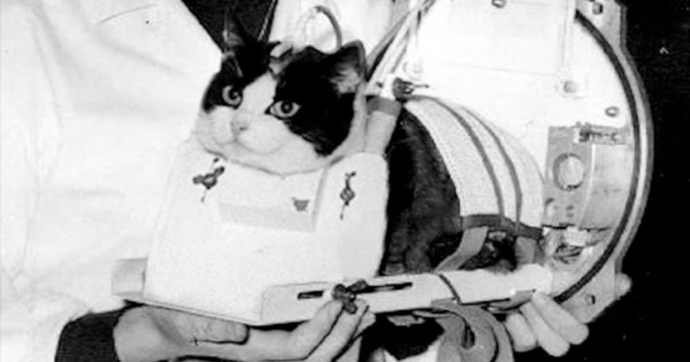

63 года назад Фелисетт стала первой кошкой в космосе
Она до сих пор единственная кошка, удостоенная чести.
На этой неделе Фелисетт стала первой кошкой в космосе, впервые появившейся на Nautilus.

Она до сих пор единственная кошка, удостоенная чести.
На этой неделе Фелисетт стала первой кошкой в космосе, впервые появившейся на Nautilus.